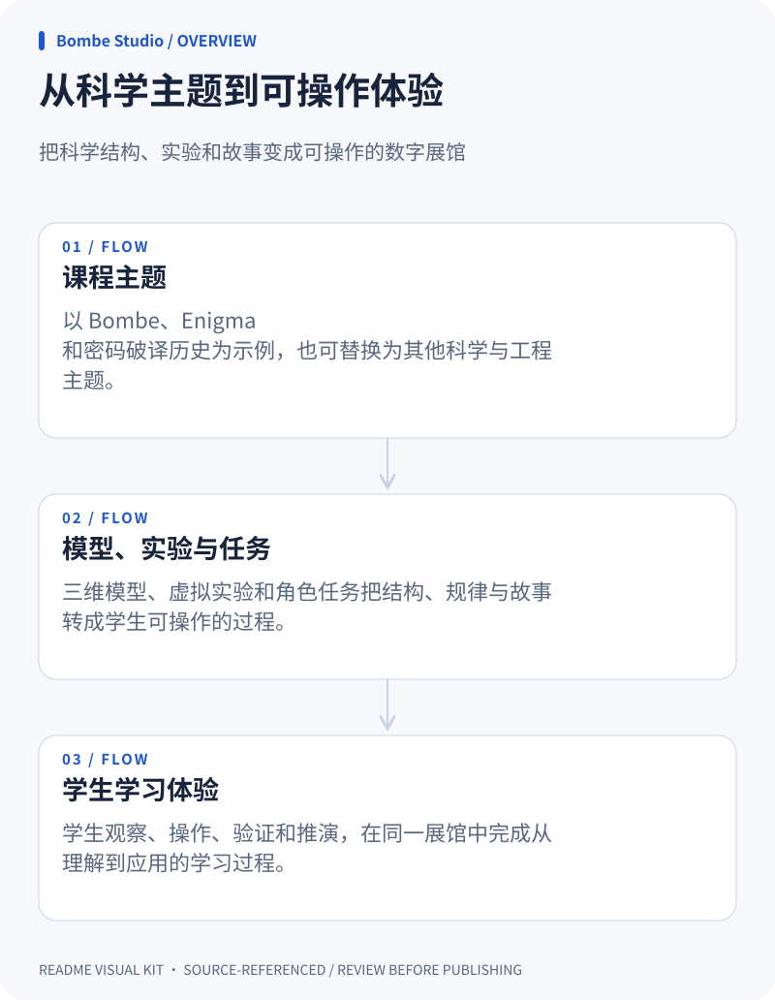
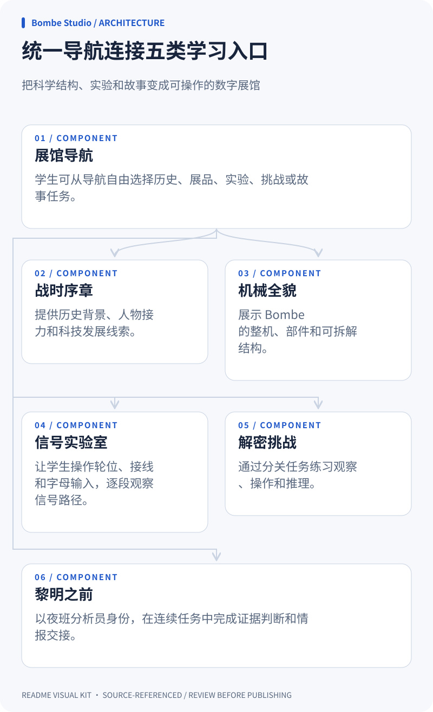
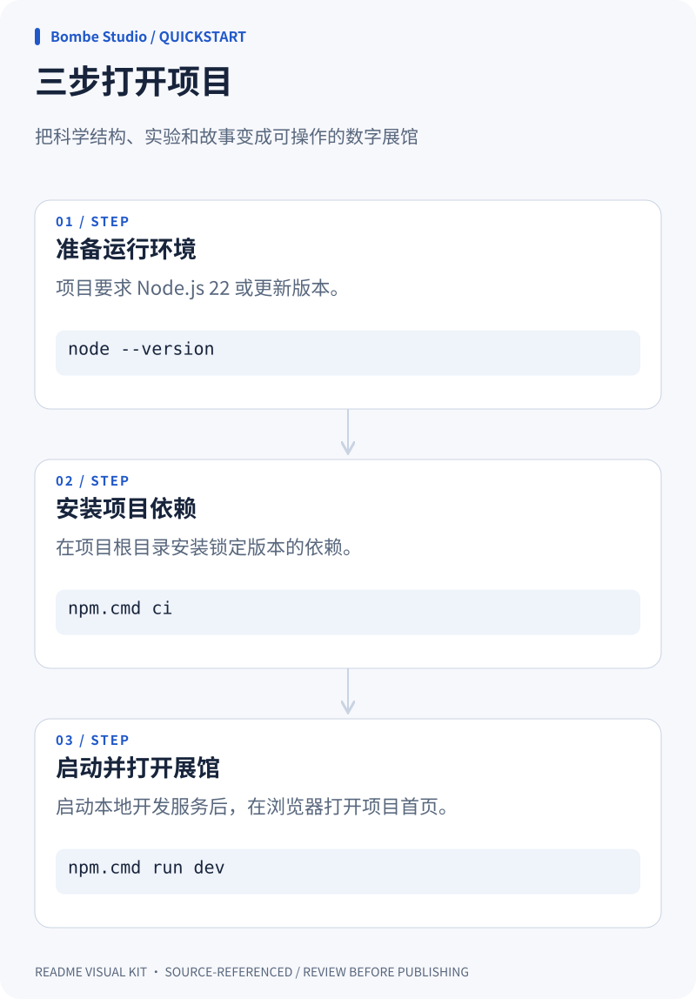

overview
Download SVG ↓从科学主题到可操作体验

Swipe diagram ↔ / 左右滑动查看完整图表

architecture
Download SVG ↓统一导航连接五类学习入口

Swipe diagram ↔ / 左右滑动查看完整图表

quickstart
Download SVG ↓三步打开项目

Swipe diagram ↔ / 左右滑动查看完整图表

Put it in your README
These paths assume your README is beside the SVGs. Adjust the prefix when copying into your repository.
Sources, not assumptions
File paths and line ranges were checked. This does not verify meaning or architecture edges. Review all claims and excerpts before publishing; excerpts may contain private data.
overview / theme README.md:7–9
Bombe Studio 是一个面向科学教育的互动数字展馆项目。它把复杂的机械结构、抽象的科学原理和具有时代背景的探索故事，转化为学生可以在电脑上直接观察、操作和推演的学习体验。 项目以 Bombe、Enigma 和密码破译历史为示例，形成四类可按课程主题定制的数字教育产品：
overview / interactive README.md:11–33
### 1. 定制 3D 模型 按课程主题制作可交互的三维立体模型。学生可以在电脑上放大、旋转模型，拆开外部结构，查看内部部件之间的关系，再通过操作控件恢复和操控模型。 以 Bombe 为例，学生可以观察机架、鼓轮阵列、机械传动、接线板和电机等系统，理解一个复杂设备如何由多个部分共同工作。相同方式也可以用于机械、工程、生物结构和其他需要空间理解的课程。 ### 2. 互动科普程序 把抽象理论转化为可以亲手完成的数字化任务。学生可以在虚拟实验中调整条件、输入信息、观察过程和比较结果，直观理解科学规律如何产生。 项目中的信号实验室将 Enigma 的转子、反射器、接线和信号路径变成可操作实验。学生可以调整轮位、接入线路、输入字母，并逐段追踪信号，看到设置变化如何影响输出。 ### 3. 角色扮演与故事推演程序 结合课程内容设置任务情境，让学生化身科学家、工程师、分析员等角色，在电脑上完成操作、判断和闯关。 “黎明之前”让学生以夜班分析员身份推进一条连续任务链：接收信息、比对档案、分析线索、设置机器、检查候选结果并完成情报交接。学生通过证据和反馈推进故事，体验提出假设、验证关系和修正结论的过程。 ### 4. 定制博物馆程序 围绕课程主题打造专属虚拟展馆。学生可以在展馆中自由漫游，在时间线、人物、展品和互动任务之间切换，沉浸式了解一个科技领域的发展历程。 当前项目包含“战时序章、机械全貌、信号实验室、解密挑战、黎明之前”五个入口。它们把历史背景、三维展品、虚拟实验和故事任务放在同一条参观路径上，可用于课堂导入、主题教学、分组探究和课后自主学习。
overview / learning README.md:35–41
## 使用方式 ### 学生使用 1. 打开项目首页，从“战时序章”了解主题背景和发展线索。 2. 进入“机械全貌”，放大、旋转并拆解三维模型，观察内部构造。 3. 进入“信号实验室”，调整轮位和接线，输入字母并逐段追踪信号。
architecture / navigation history-preview.html:6–8
<header class="masthead"><a class="brand" href="#/history" data-page="history" aria-label="译码档案，战时序章首页"><span class="archive-mark" aria-hidden="true"><i></i><i></i><i></i></span><span>译码档案<small>战争、机器与人的故事</small></span></a><nav class="archive-chapters" aria-label="展馆导航"><a href="#/history" data-page="history" data-chapter="history" aria-current="page">战时序章</a><a href="/#/" data-page="exhibit" data-chapter="exhibit">机械全貌</a><a href="/#/lab/drums" data-page="lab" data-topic="drums" data-chapter="lab">信号实验室</a><a href="/#/challenge" data-page="challenge" data-chapter="challenge">解密挑战</a><a href="/#/mission" data-page="mission" data-chapter="mission">黎明之前</a></nav></header> <main class="history-main"> <section id="lifeline" class="archive-cover" data-history-scene aria-labelledby="hero-title"><div class="cover-grid"><div class="cover-copy"><p class="cover-edition">战时序章 <span>1932—1945</span></p><h1 id="hero-title" tabindex="-1">一封电报，<br>先要穿过海面。</h1><p class="hero-intro">它带着命令、位置和航向离开港口。<br>到了另一端，先要有人把它抄下来。</p><div class="cover-actions"><a class="primary-link" href="#lifeline-context">沿着这条线索往下读 <span aria-hidden="true">↓</span></a><a href="/#/" data-page="exhibit">先去看那台机器 <span aria-hidden="true">↗</span></a></div><p class="reading-note">18 节历史线索 · 4 段叙事 · 约 20 分钟阅读</p></div><div class="cover-image"><span class="photo-corner">北大西洋 · 1941年12月</span><figure class="archive-photo "><img src="assets/history/atlantic-aquila-1941.jpg" width="1200" height="941" data-history-image fetchpriority="high" decoding="async" alt="运输船在北大西洋风浪中明显倾斜，后方可见另一艘船。"><figcaption>护航航行中的 USS Aquila。美国海军档案 80-G-405290；此照并非1939年画面。 <a href="https://commons.wikimedia.org/wiki/File:USS_AQUILA_(AK-47)_In_heavy_seas,_while_steaming_with_a_North_Atlantic_Convoy,_December_1941.jpeg" target="_blank" rel="noopener noreferrer" aria-label="查看影像来源（新窗口）">影像来源 ↗</a></figcaption></figure><span class="image-register" aria-hidden="true">通信，穿越风浪。</span></div></div><div class="cover-bottom"><span>从海上的电波，到机房里的鼓轮</span><span data-load-status role="status" aria-live="polite">正在载入档案影像。</span></div><div class="lifeline-context" id="lifeline-context"><div class="section-index"><span>01</span><p>1939—1945 / 先看那条航线</p></div><h2 id="lifeline-title">战争先落在一条航线上。</h2><div class="section-prose"><p>1939 年秋天，欧洲的战争沿着海运线铺开。英国需要通过海运接收物资与人员，德国潜艇则在航线上寻找下手的机会。商船和护航舰要走很远，船员不知道下一次警报会在什么时候响起。</p>
architecture / history history-preview.html:6–8
<header class="masthead"><a class="brand" href="#/history" data-page="history" aria-label="译码档案，战时序章首页"><span class="archive-mark" aria-hidden="true"><i></i><i></i><i></i></span><span>译码档案<small>战争、机器与人的故事</small></span></a><nav class="archive-chapters" aria-label="展馆导航"><a href="#/history" data-page="history" data-chapter="history" aria-current="page">战时序章</a><a href="/#/" data-page="exhibit" data-chapter="exhibit">机械全貌</a><a href="/#/lab/drums" data-page="lab" data-topic="drums" data-chapter="lab">信号实验室</a><a href="/#/challenge" data-page="challenge" data-chapter="challenge">解密挑战</a><a href="/#/mission" data-page="mission" data-chapter="mission">黎明之前</a></nav></header> <main class="history-main"> <section id="lifeline" class="archive-cover" data-history-scene aria-labelledby="hero-title"><div class="cover-grid"><div class="cover-copy"><p class="cover-edition">战时序章 <span>1932—1945</span></p><h1 id="hero-title" tabindex="-1">一封电报，<br>先要穿过海面。</h1><p class="hero-intro">它带着命令、位置和航向离开港口。<br>到了另一端，先要有人把它抄下来。</p><div class="cover-actions"><a class="primary-link" href="#lifeline-context">沿着这条线索往下读 <span aria-hidden="true">↓</span></a><a href="/#/" data-page="exhibit">先去看那台机器 <span aria-hidden="true">↗</span></a></div><p class="reading-note">18 节历史线索 · 4 段叙事 · 约 20 分钟阅读</p></div><div class="cover-image"><span class="photo-corner">北大西洋 · 1941年12月</span><figure class="archive-photo "><img src="assets/history/atlantic-aquila-1941.jpg" width="1200" height="941" data-history-image fetchpriority="high" decoding="async" alt="运输船在北大西洋风浪中明显倾斜，后方可见另一艘船。"><figcaption>护航航行中的 USS Aquila。美国海军档案 80-G-405290；此照并非1939年画面。 <a href="https://commons.wikimedia.org/wiki/File:USS_AQUILA_(AK-47)_In_heavy_seas,_while_steaming_with_a_North_Atlantic_Convoy,_December_1941.jpeg" target="_blank" rel="noopener noreferrer" aria-label="查看影像来源（新窗口）">影像来源 ↗</a></figcaption></figure><span class="image-register" aria-hidden="true">通信，穿越风浪。</span></div></div><div class="cover-bottom"><span>从海上的电波，到机房里的鼓轮</span><span data-load-status role="status" aria-live="polite">正在载入档案影像。</span></div><div class="lifeline-context" id="lifeline-context"><div class="section-index"><span>01</span><p>1939—1945 / 先看那条航线</p></div><h2 id="lifeline-title">战争先落在一条航线上。</h2><div class="section-prose"><p>1939 年秋天，欧洲的战争沿着海运线铺开。英国需要通过海运接收物资与人员，德国潜艇则在航线上寻找下手的机会。商船和护航舰要走很远，船员不知道下一次警报会在什么时候响起。</p>
architecture / exhibit src/model.js:6–17
// Display units, not surveyed CAD dimensions. Y is up; +Z faces the drums.
export const DIM = Object.freeze({ width: 7.6, height: 6.6, depth: 2.05, columns: 12, banks: 3, rows: 3, drumRadius: .218, columnPitch: .545 });
export const PARTS = Object.freeze([
{ id: 'frame', index: '01', name: '钢制机架', english: 'THE FRAME', short: '机架', color: P.paint, subtitle: '给精密逻辑，一个坚实的骨架。', description: '钢制框架承载鼓轮、传动机构与后部接线。打开结构，可以看到各系统如何围绕同一副骨架协同工作。', note: '外壳、尺寸与拆分路径均为展示性重建。', anchor: [-3.75, 5.7, .8] },
{ id: 'drums', index: '02', name: '鼓轮阵列', english: 'THE DRUMS', short: '鼓轮', color: P.bronze, subtitle: '108 个鼓轮，铺开可能性。', description: '三组阵列，每组三行、每行十二个鼓轮。每一竖列的三个鼓轮对应一台 Enigma 的转子组，整机共对应 36 组。', note: '颜色与细部经过艺术化整理；转速仅作教学演示。', anchor: [2.8, 5.5, 1.2] },
{ id: 'drive', index: '03', name: '机械传动', english: 'THE DRIVE', short: '传动', color: P.brass, subtitle: '把一次旋转，传给整面阵列。', description: '主轴、横轴与齿轮把电机的运动传给鼓轮。真实机器以机械联动改变鼓轮位置，在各个位置检验电路条件。', note: '传动几何与步进已简化，不表示真实齿比。', anchor: [3.15, 4, -.1] },
{ id: 'board', index: '04', name: '接线与对角板', english: 'THE CONNECTIONS', short: '接线', color: P.brass, subtitle: '把线索，连接成电路。', description: '操作员依据推测明文形成的“菜单”连接后部插线。Welchman 的对角板利用插线关系的互易性，帮助排除更多错误设置。', note: '接线板在拆解时翻转，便于观察；不执行密码分析。', anchor: [2.7, 5.4, -1.1] },
{ id: 'motor', index: '05', name: '电机与底座', english: 'THE MOTOR', short: '电机', color: P.blue, subtitle: '让抽象的推理，开始运动。', description: '底部电机提供机械动力，驱动机构进行连续搜索。停机提示的是值得进一步检查的候选设置，仍需要后续人工与机器验证。', note: '电机与底座为示意造型，未复刻原机电路。', anchor: [1.9, .85, .4] },
]);
export function createProduct({ textures = {} } = {}) {
const root = new THREE.Group(); root.name = 'Turing–Welchman Bombe';architecture / lab src/lab.js:9–25
export async function createLab(container, { motion, progress }) {
container.innerHTML = template;
const $ = selector => container.querySelector(selector), cleanups = [];
const state = { topic: 'drums', positions: [0, 0, 0], pairs: [], trace: null, progress: -1, playing: false, history: [], exercise: false, follow: true };
let active = false, disposed = false, stage = null, model = null, raf, previous = performance.now(), visibleStage = -2, contextLost = false, pendingPort = null;
const on = (el, name, handler, options) => { el.addEventListener(name, handler, options); cleanups.push(() => el.removeEventListener(name, handler, options)); };
const announce = value => { $('#lab-status').textContent = value; };
const walkthrough = createWalkthrough(container, on, {
prepare() {
reset({ keepGuide: true });
if (state.topic === 'wiring') $('.lab-topic-tabs [data-topic="drums"]').click();
$('#lab-keyboard [data-letter="A"]').focus({ preventScroll: true });
},
input, step,
fullCircuit() { $('.lab-topic-tabs [data-topic="drums"]').click(); },
finish() { state.progress = 9; state.playing = false; syncProgress(); },
prepareWiring() { reset({ keepGuide: true }); $('#lab-plug-a').value = 'A'; $('#lab-plug-b').value = 'C'; openSettings(); $('#lab-plug-b').focus({ preventScroll: true }); },architecture / challenge src/challenge.js:8–19
const HISTORY_KEY = 'bombe-quest-recent-v1';
export async function createChallenge(container, { motion, progress }) {
container.innerHTML = template;
const $ = selector => container.querySelector(selector), cleanups = [];
const on = (el, name, fn) => { el.addEventListener(name, fn); cleanups.push(() => el.removeEventListener(name, fn)); };
const announce = text => { $('#quest-status').textContent = text; };
let session, mission, stage = null, model = null, active = false, disposed = false, contextLost = false, raf, previous = performance.now();
let positions = [0, 0, 0], trace = null, signalProgress = -1, target = 9, playing = false, observationCount = 0, follow = true, spread = false, focusedPart = null, visibleSegment = -2, wasComplete = false;
const question = () => session.round.questions[session.index];
const complete = () => Boolean(trace && signalProgress >= target);
let recent = [];
try { const saved = JSON.parse(localStorage.getItem(HISTORY_KEY) || '[]'); if (Array.isArray(saved)) recent = saved.filter(item => Array.isArray(item) && item.every(s => typeof s === 'string')).slice(-2); } catch { /* Storage is optional; fresh randomization still works. */ }architecture / mission src/mission.js:7–25
export function createMission(root, { motion, progress = () => {}, sceneFactory = createMissionScene } = {}) {
const view = root.ownerDocument.defaultView, doc = root.ownerDocument;
motion ||= view.matchMedia('(prefers-reduced-motion: reduce)');
root.innerHTML = missionShell;
const $ = s => root.querySelector(s), task = $('#mission-task');
let state = initialMission(), active = false, disposed = false, scene, cinematic = false, selectedView = 'entry';
let transitionId = 0, transitionPaused = false, pendingAction = null, unavailable = false;
const cleanups = [], on = (el, name, fn) => { el.addEventListener(name, fn); cleanups.push(() => el.removeEventListener(name, fn)); };
const formatElapsed = seconds => `${String(Math.floor(seconds / 60)).padStart(2, '0')}:${String(seconds % 60).padStart(2, '0')}`;
const beatIndex = value => Number.isInteger(value?.beat) ? value.beat : Number.isInteger(value?.stage) ? value.stage : 0;
const currentBeat = value => MISSION.stages?.[beatIndex(value)] || {};
const viewPlaces = Object.freeze({
floor: '夜班楼层 · 连通走廊',
entry: '夜班入口 · 外廊', radio: '无线电室 · 接收台', archive: '档案走廊 · 班次记录墙',
analysis: '分析室 · 放大灯下', machine: '机房 · 接线工作台', map: '地图室 · 北港墙图', handoff: '交接室 · 封存桌',
});
const viewCaptions = Object.freeze({
floor: '中央走廊连接五个前区；档案与分析室的后门通往交接室和地图室。',
entry: '入口登记、耳机和雾况记录都在这张交班桌上。', radio: '接收台留下频段、纸带和重复报头。',quickstart / runtime package.json:6–8
"engines": {
"node": ">=22"
},quickstart / install README.md:66–71
项目使用电脑浏览器访问，完整体验建议使用带鼠标的电脑。需要 Node.js 22 或更新版本： ```powershell npm.cmd ci npm.cmd run dev ```
quickstart / open package.json:9–13
"scripts": {
"build": "node build.mjs",
"dev": "node dev-server.mjs",
"deploy": "npm run build && npx wrangler deploy",
"test": "node --test tests/*.test.mjs"